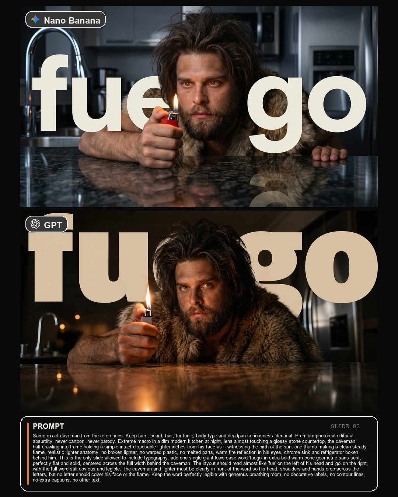

Case study 01 · Fuego
Una sola palabra de tipografia.
Una sola palabra de tipografia.
Todo lo demas, afuera.
La slide del encendedor fue la unica donde dejamos entrar texto dentro de la imagen. Funciono porque la regla era estricta: una sola palabra, gigante, legible, sin otras capas tipograficas.
Macro
Typographic exception
Failure control
Prompt exacto
Same exact caveman from the references. Keep face, beard, hair, fur tunic, body type and deadpan seriousness identical. Premium photoreal editorial absurdity, never cartoon, never parody. Extreme macro in a dim modern kitchen at night, lens almost touching a glossy stone countertop, the caveman half-crawling into frame holding a simple intact disposable lighter inches from his face as if witnessing the birth of the sun, one thumb making a clean steady flame, realistic lighter anatomy, no broken lighter, no warped plastic, no melted parts, warm fire reflection in his eyes, chrome sink and refrigerator bokeh behind him. This is the only slide allowed to include typography: add one single giant lowercase word 'fuego' in extra-bold warm-bone geometric sans serif, perfectly flat and solid, centered across the full width behind the caveman. The layout should read almost like 'fue' on the left of his head and 'go' on the right, with the full word still obvious and legible. The caveman and lighter must be clearly in front of the word so his head, shoulders and hands crop across the letters, but no letter should cover his face or the flame. Keep the word perfectly legible with generous breathing room, no decorative labels, no contour lines, no extra captions, no other text.
